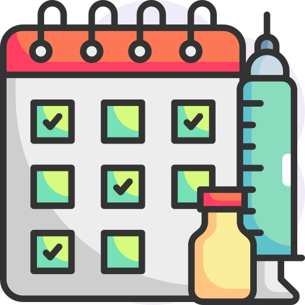
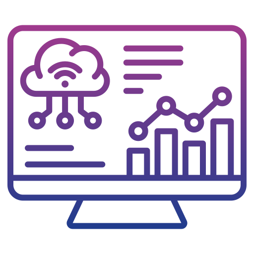

Benefits of Our Birth Record Monitoring System
Why our system makes birth registration smarter, faster, and more reliable

Accurate Data Collection
Collects newborn data instantly from the IoT device, reducing human error and duplication.

Real-Time Monitoring
Monitors birth registrations continuously and flags incomplete or missing entries.

Vaccination Reminder
Provides automated reminders for upcoming vaccinations based on child birth records.
Accessible in Remote Areas
Works with minimal human intervention in clinics or rural birth centers using IoT modules.
Faster Certificate Processing
Enables rapid generation of registration numbers and quick access to birth certificates.

Smart Analytics
Generates useful insights on gender ratio, gestation trends, and registration coverage.